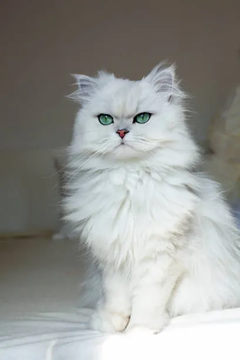

Gato Persa
Haga click para ver más detalles

Gato Siamés
El gato siamés es famoso por su apariencia elegante y sus ojos azules penetrantes. Son gatos muy vocales y sociales, que disfrutan de la compañía humana.

Gato Mau Egipcio
El gato Mau Egipcio es una raza natural conocida por su pelaje moteado y su agilidad. Son gatos activos y juguetones, que requieren mucho estímulo físico y mental.